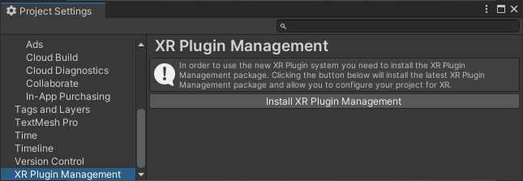
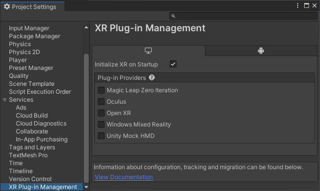
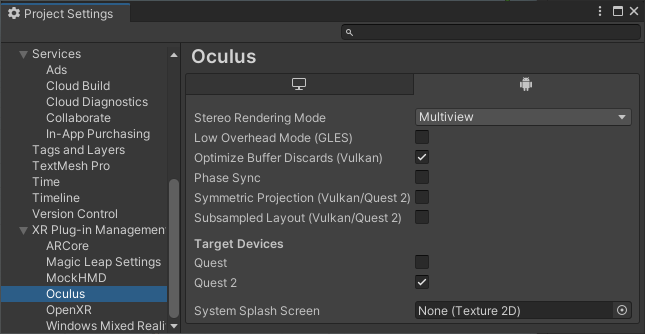
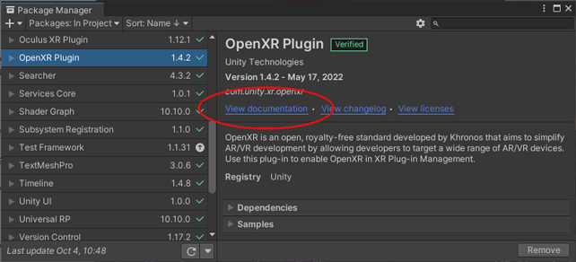

Choose XR provider plug-ins
Provider plug-ins are packages created to support XR devices and platforms.
Use the XR Plug-in Management settings to manage which XR devices and platforms your project supports. You can also configure key settings for these XR provider plug-ins.
See XR provider plug-in framework for information about provider plug-ins and how they work.
先决条件
Before you can enable XR plug-ins, you must install the XR Plug-in Management package. You can install the package directly from the Project Settings window:
Open the Project Settings window (menu: Edit > Project Settings).
-
Select XR Plug-in Management from the list of settings areas along the left side of the settings window.

Before installing the XR Plug-in Management package -
If necessary, click Install XR Plug-in Management.

After installing the XR Plug-in Management package
The XR Plug-in Management settings page displays a tab for each available build target. Each tab displays the list of available XR provider plug-ins for that platform. This list contains the plug-ins officially supported by Unity or its partners and also any third-party provider plug-ins you have installed with the Package Manager.
Tip: Use the Unity Hub to install platform modules, such as Android or iOS, to add support for additional build targets. See Add modules in the Unity Hub documentation for instructions.
Enable provider plug-ins
When you enable a plug-in, XR Plug-in Management installs the associated package.
To enable a provider plug-in:
Open the Project Settings window (menu: Edit > Project Settings) and select the XR Plug-in Management section.
-
Select the tab for the target build platform. For example, to enable a plug-in for a device that runs the Android operating system, click the tab with the Android icon.

Android build platform with the ARCore provider enabled Enable the desired provider plug-in.
Repeat for additional plug-ins.
注意：
- Disabling a provider does not remove the package; to remove a provider plug-in, remove the associated package with the Package Manager.
- If you do not see a provider in the list, you might need to install the associated package with the Package Manager. Some provider plug-in packages are distributed by the device maker, not by Unity.
Set provider plug-in options
After you enable a provider plug-in and Unity installs the associated package, any settings for the provider are displayed as subsections under the XR Plug-in Management settings.

Oculus provider plug-in settings under XR Plug-in Management
If a plug-in supports more than one build target, its settings page includes a tab so that you can configure the settings for each target independently.
To configure the settings for a provider plug-in:
- Open the Project Settings window (menu: Edit > Project Settings).
- Under XR Plug-in Management, select the name of the provider plug-in.
- If present, select the tab for the platform build target. For example, to configure settings for Android devices, click the tab with the Android icon. (The tabs are only shown when a plug-in supports more than one build target.)
- Configure the settings as required.
See the documentation of individual plug-ins for information about plug-in settings. You can access the documentation using the View documentation link in the Package Manager.

Use the View documentation link to access plug-in documentation
Project validation
Some provider plug-ins and other packages implement project validation checks to help ensure that your project is set up correctly. You can view the status of these checks on the Project Validation section underneath XR Plug-in Management on the Player Settings window.

Project validation checks
If a validation check is followed by a Fix button, you can click the button to automatically fix the issue. Otherwise, you must fix the issue manually. Clicking Edit opens the settings UI to the appropriate section so that you can make any needed changes. Validation checks marked with a red stop icon must be corrected. Checks marked with a yellow warning icon can be ignored or deffered, but you should fix them if possible for best performance or compatibility.
Refer to XR project validation window for additional information.
Support multiple provider plug-ins
You can enable more than one provider plug-in to support multiple XR devices and platforms in the same project.
Note: In some cases, one provider plug-in can support more than one device and operating system. For example, the OpenXR plug-in supports multiple XR devices, operating systems, and build targets.
Unity includes all the enabled plug-ins for the current build target when you make a build. At runtime, Unity uses the first plug-in that loads successfully. Unity attempts to load provider plug-ins in the order they are shown in the XR Plug-in Management list, which is in alphabetical order by default. If you need more control over which plug-in is loaded, you can do one of the following:
- Disable Initialize XR at startup and include your own application logic for selecting the provider at runtime.
- Include your own custom build script to sort the list of providers in the desired order.
- Manually enable only the desired provider before building.
See XR loading for more information about customizing how provider plug-ins are loaded and initialized.
Note: The Mock HMD Loader plug-in only works in the Unity Editor during Play mode and does not affect builds.